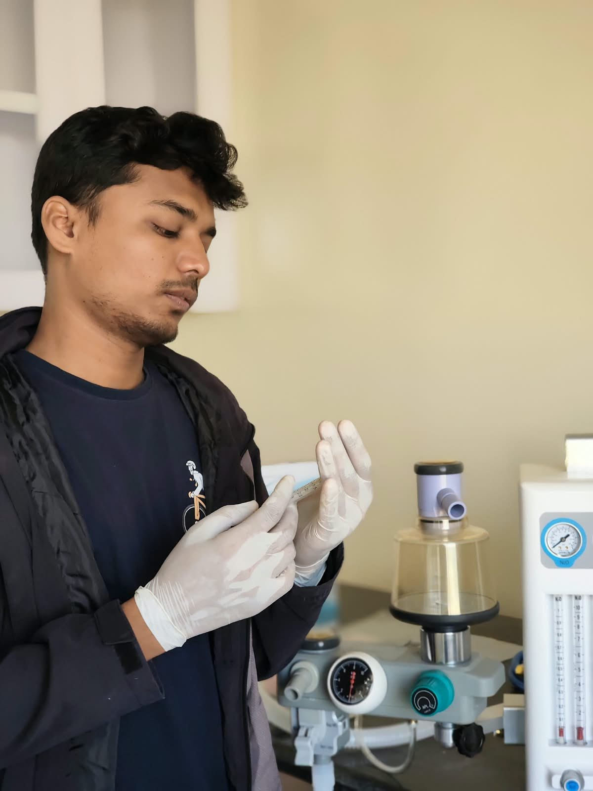
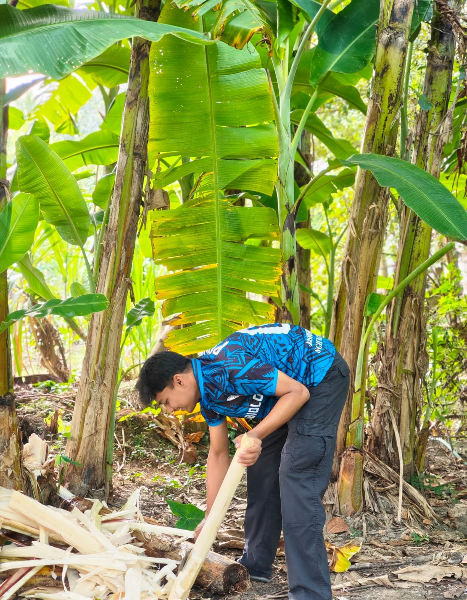
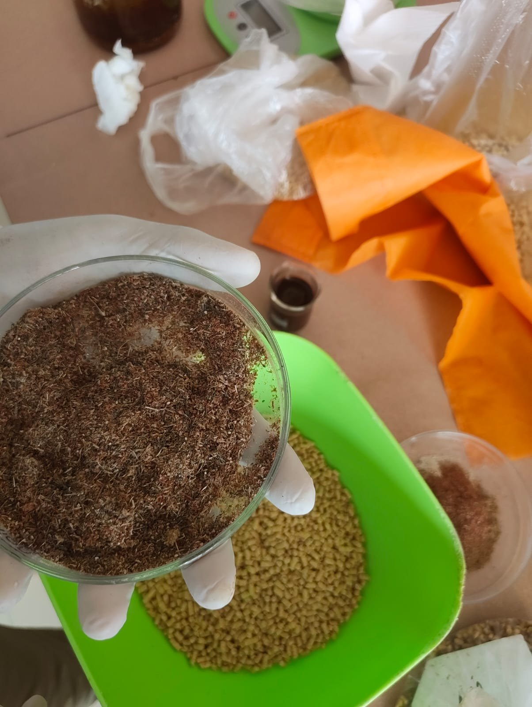
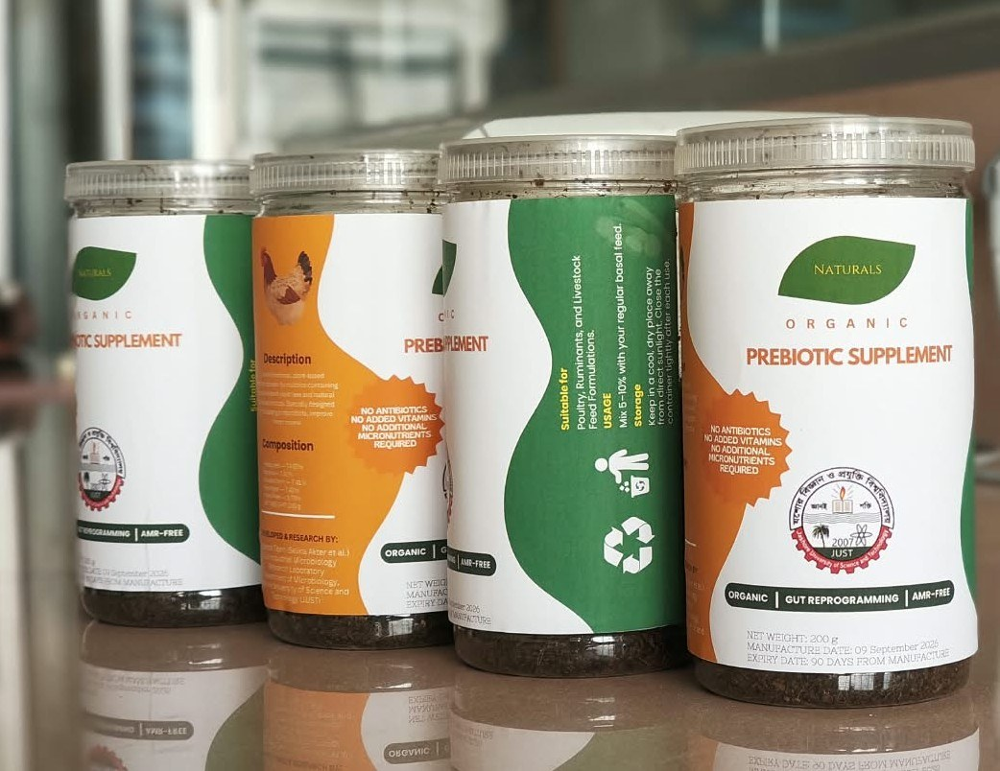
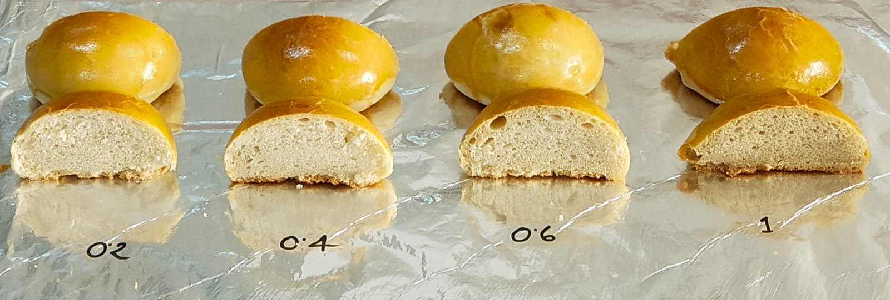
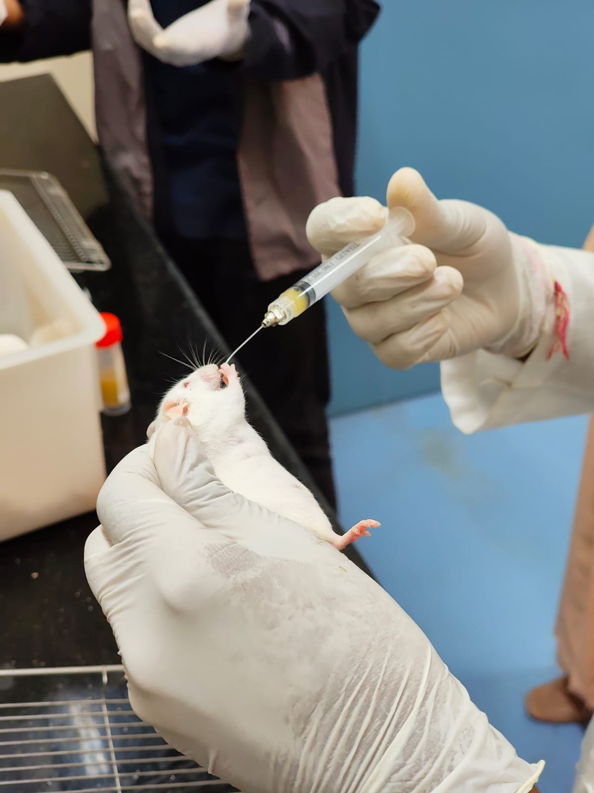
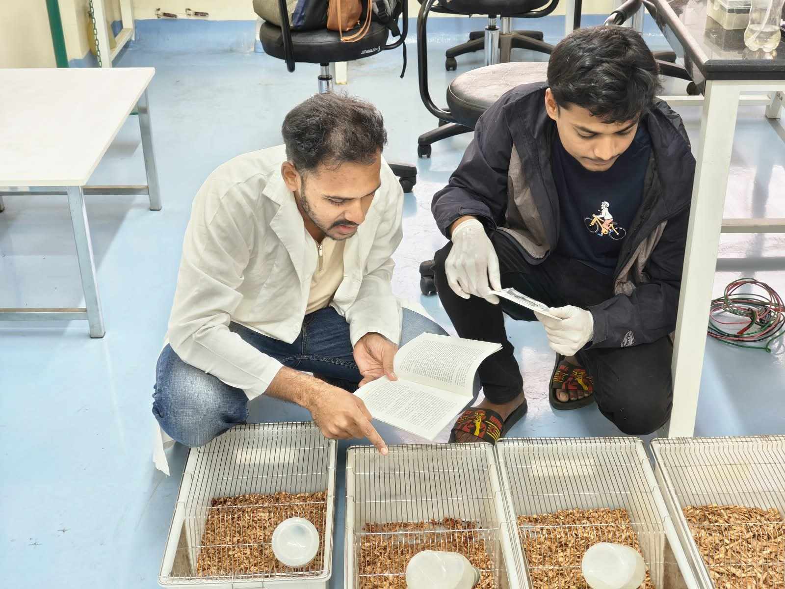

From raw plant material to an organic, antibiotic-free prebiotic supplement — tested in food and in an in-vivo feeding study.
Working in the Department of Microbiology, Jashore University of Science and Technology, I took part in developing a plant-based prebiotic supplement — from collecting and processing raw material to formulation, food testing and an animal feeding study.
The aim: support gut health in livestock while reducing reliance on antibiotics, which helps limit antimicrobial resistance (AMR).


Collecting plant raw material — banana pseudostem — as the starting material for the prebiotic formulation.

The material is dried and milled into a fine prebiotic powder, then weighed and blended with basal feed pellets.

A packaged, organic supplement for poultry, ruminants and livestock feed — no antibiotics, no added vitamins, designed for gut health and AMR-free production.

Bread baked with increasing levels of the prebiotic (0.2 to 1) to compare crumb structure, volume and texture.

Controlled oral dosing in a laboratory mouse model to evaluate the effect of the formulation.

Checking cages, feed intake and animal condition, and recording observations against the study protocol.